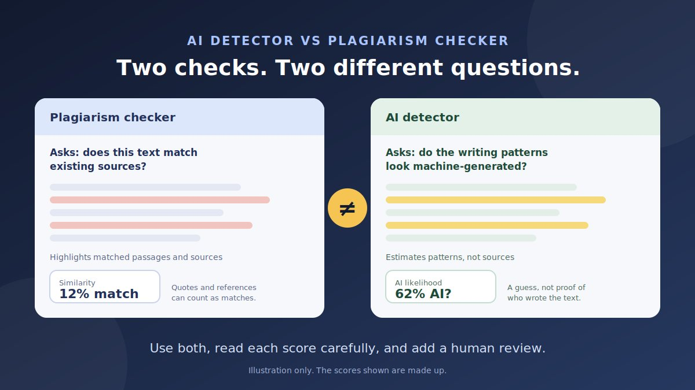

You run a blog post through a plagiarism checker and it comes back clean: "2% similarity." Then an AI detector says "74% AI." Which one is right? Both can be right, because they are not measuring the same thing. This guide explains the difference between an AI detector and a plagiarism checker, what each score does and does not tell you, and how to use both without getting misled.
The difference at a glance
| Plagiarism checker | AI detector | |
|---|---|---|
| Question it answers | Does this text match something already published or stored? | Do the writing patterns look like machine-generated text? |
| How it works | Compares your text with indexed web pages, publications, and sometimes previously submitted documents | A trained classifier estimates how closely the text resembles human or machine writing |
| Typical output | A similarity percentage and a list of matched passages with their sources | A probability or percentage, often with highlighted sentences |
| What it cannot tell you | Whether AI wrote the text, or whether a reworded idea was copied from an unindexed source | Where the text came from, or who actually wrote it |
| Common false alarms | Quotes, reference lists, standard phrases, boilerplate | Formulaic or technical writing, edited text, non-native English writing |
| Best used for | Finding copied or overlapping text | A rough signal on how a text was produced, to guide review |
How a plagiarism checker works
A plagiarism checker breaks your text into pieces and searches for overlapping strings in the sources it can access. That usually means large indexes of public web pages and published works, and in some products, a library of documents submitted by other users. The report shows how much of your text matches and which sources match.
- Similarity is not plagiarism. A properly quoted passage, a reference list, a common technical term, or a standard sentence can all count as a "match." Read the highlighted passages and their sources before deciding anything.
- Coverage limits matter. A checker can only find what is in the sources it can search. Paywalled, private, or offline material may not be covered.
- Paraphrasing can fool simple tools. Basic checkers look for matching wording, so reworded copying may score low. Some newer products say they can detect meaning-level similarity. How well they do this varies, so test before you rely on it.
How an AI detector works
An AI detector does not look up a source. It is typically a classifier trained on large samples of human and machine writing. It looks at patterns, such as how predictable the word choices are and how much sentence structure varies, and estimates how likely it is that a machine produced the text.
- The score is a likelihood, not a share of copied text and not proof of authorship.
- It cannot see the writing process. It cannot tell whether a person wrote the words, dictated them, or polished an AI draft.
- It can be wrong in both directions. Genuine human writing can be flagged, and edited or paraphrased AI text can slip through.
For a deeper look at what these scores mean and how to avoid false flags, read our guide to a free AI content detector for blog posts.
Four possible results, and what each means
Because the two tools measure different things, their results can point in any direction. Here is how to read the combinations.
| Similarity | AI score | What it may mean | Next step |
|---|---|---|---|
| Low | Low | Original wording, and no strong machine-writing pattern | Still fact-check and review for quality |
| Low | High | New wording that looks machine-generated, or a human style that confuses detectors | Review the process, check facts, and add original detail. This is not plagiarism. |
| High | Low | Text that overlaps with existing sources, written in a human-like way | Read the matches. Fix uncredited copying, or add quotation marks and sources for legitimate quotes. |
| High | High | Possible copying plus machine-like patterns, or an AI tool that reproduced existing phrases | Review matches and sources carefully, then rewrite in your own words with verified facts |
Which result do I have?
Pick what your two checks showed. This helper explains the reading and next step. It runs in your browser, and nothing you choose leaves this page.
Common mix-ups
- "No plagiarism means a human wrote it." No. AI tools generate new wording, so AI-written text often shows few or no matches. A clean similarity report says nothing about who or what wrote the text.
- "A low AI score means it is not copied." No. A copied passage written by a person can look perfectly human to an AI detector.
- "AI text always passes plagiarism checks." Not always. A text can still reproduce common phrases, closely follow a source, or repeat ideas that produce matches.
- "A paraphrasing tool solves both problems." It may lower both scores, but it does not make the content accurate, original in thought, or properly credited.
- "100% unique" means good. Unique wording can still be wrong, thin, or unhelpful.
- "Detectors check against a database of AI text." Typically they do not. Most estimate patterns, which is why they give probabilities, not source matches.
Which check do you need?
| Situation | Most useful check |
|---|---|
| Checking a freelancer or guest post before publishing | Plagiarism checker first, then an AI detector as a secondary signal, then a fact-check |
| Checking your own AI-assisted draft | Fact-check and editorial review first. A plagiarism check helps catch accidental overlap. An AI detector is optional. |
| Looking for copied or scraped versions of your content | Plagiarism or duplicate-content search |
| Product descriptions reused across sites | Plagiarism checker, to find copied supplier text |
| Medical, legal, or financial content | Fact-check by a qualified reviewer. Detectors are secondary. |
| Deciding whether to disclose AI use | Your own process records. An AI detector is only a rough hint. |
Quick chooser
How to use both together
- Run the plagiarism check first. Exclude quotations, reference lists, and boilerplate if the tool allows it, then read each matched passage and its source.
- Fix real overlap. Rewrite passages that are too close, add quotation marks and credit where you quote, and remove copied boilerplate.
- Run an AI detector, ideally two different tools. Treat the result as a rough signal, and read any highlights.
- Fact-check. Verify names, dates, numbers, quotes, and claims against reliable sources. This catches errors that neither tool can.
- Do an editorial review. Is the post original, specific, and helpful, with real experience behind it?
- Decide and record. Note the tools, dates, and scores, and what you changed. Tools and models update, so scores can change.
Some products combine plagiarism and AI checks in a single scan, and comparison sites note that a combined scan can use more credits. If you use one, check how it is priced and read each result separately. The two scores still measure different things.
Fairness and limits
- Never rely on a single score to accuse someone. Both tools produce false alarms.
- Be careful with non-native English writers. AI detectors can flag simpler, more predictable phrasing as machine-like, and plagiarism checkers can flag standard phrases.
- Give people a way to respond. Offer to look at drafts, notes, or sources before reaching a conclusion.
- Protect confidentiality. Read the tool's privacy terms before you paste unpublished or client content.
What neither tool checks
- Accuracy. A text can be original and well written and still be wrong.
- Usefulness. Neither tool tells you whether a post answers the reader's question.
- Rights and licensing. Neither checks whether you have permission to use an image, quote, or data set.
- Real experience and expertise. Only a human reviewer can judge whether the author knows the subject.
What this means for SEO
Google has said it does not penalize content just because AI was involved, and that it rewards helpful, original content however it is made. Its spam policies, though, cover practices such as mass-producing low-value pages to manipulate rankings and copying content from other sites. A plagiarism check helps you avoid accidental copying, and a detector can prompt a closer look, but neither score is something Google reads from your site. The safest strategy is the same either way: publish accurate, original, useful posts with a clear author behind them.
Conclusion
AI detectors and plagiarism checkers solve different problems. One looks for overlap with existing text, and the other estimates how text was produced. Use them together when it matters, read each result for what it measures, expect false alarms from both, and add fact-checking and editorial review. A clean score on either tool is never a substitute for accurate, original, helpful writing.
Looking at a message or offer that seems suspicious for other reasons? Paste it into our free checker for a quick first read, or browse more guides on the Nofakey.ai blog.
Frequently asked questions
Is an AI detector the same as a plagiarism checker?
No. A plagiarism checker compares text against existing sources and reports matches. An AI detector estimates whether the writing patterns look machine-generated. They answer different questions and one cannot replace the other.
Can a plagiarism checker detect AI-written text?
Not reliably. AI-written text is usually newly generated wording, so it often shows few or no matches. A plagiarism checker finds overlap with existing sources, not whether a machine produced the text.
Can AI-generated text pass a plagiarism check?
Yes. A passage can be original in wording and still be AI-generated, and it can also repeat common phrases or ideas that produce some matches. Passing a plagiarism check says nothing about whether AI was used.
Does a high similarity score mean I plagiarized?
Not necessarily. Properly cited quotations, reference lists, common terminology, and standard phrases can all raise a similarity score. Read the matched passages and their sources before drawing any conclusion.
Do I need both an AI detector and a plagiarism checker?
It depends on your goal. For published work, many teams use both, plus a fact-check and an editorial review. Use a plagiarism checker to find copied or overlapping text, and an AI detector, with caution, as a signal about how the text was produced.
Got a message or offer you want a quick first read on?
Run it through the checker